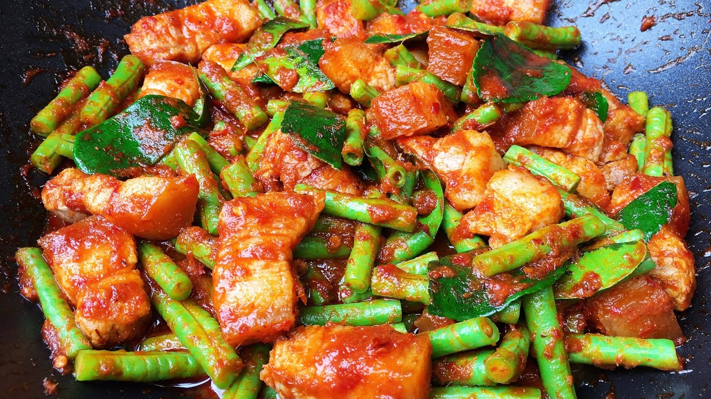

ผัดพริกแกงหมู

วัตถุดิบผัดพริกแกงหมู
| วัตถุดิบ |
ปริมาณ |
| 1.หมูหั่นชิ้นหรือหมูสับ |
200 กรัม |
| 2.ถั่วฝักยาวหั่นท่อน |
ตามความชอบ |
| 3.น้ำพริกแกงเผ็ด |
1-2 ช้อนโต๊ะ |
| 4.ใบโหระพา |
ใส่หรือไม่ใส่ก็ได้ |
| 5.น้ำตาลทราย |
1 ช้อนโต๊ะ |
| 6.น้ำปลา |
1 ช้อนโต๊ะ |
| 7.น้ำมันพืช |
2 ช้อนโต๊ะ |
| 8.ใบมะกรูดซอย |
10 ใบ |
วิธีทำผัดพริกแกงหมู
- ตั้งกระทะใส่น้ำมันพืชลงไป พอร้อนใส่น้ำพริกแกงลงไปผัดพอหอม
- ใส่หมูลงไปผัดจนสุก ใส่ถั่วฝักยาวผัดตามชอบ
- ปรุงรสด้วยน้ำตาลทรายกับน้ำปลา
- ใส่ใบโหระพาและใบมะกรูดซอย ผัดพอเข้ากัน ปิดไฟ ยกลงจากเตา ตักเสิร์ฟพร้อมข้าวสวยร้อน ๆ

Comment